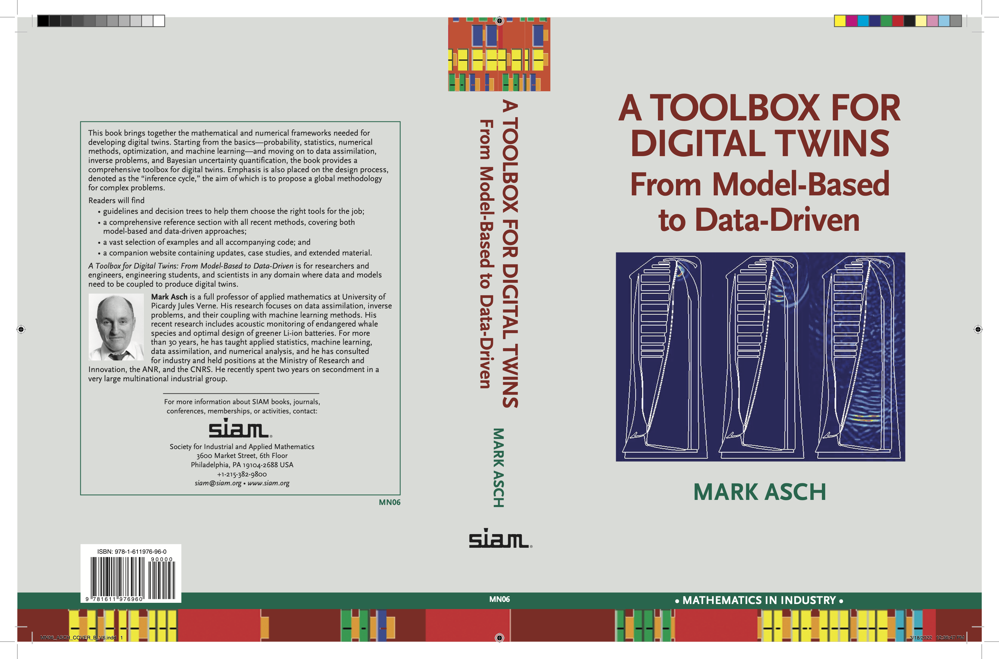
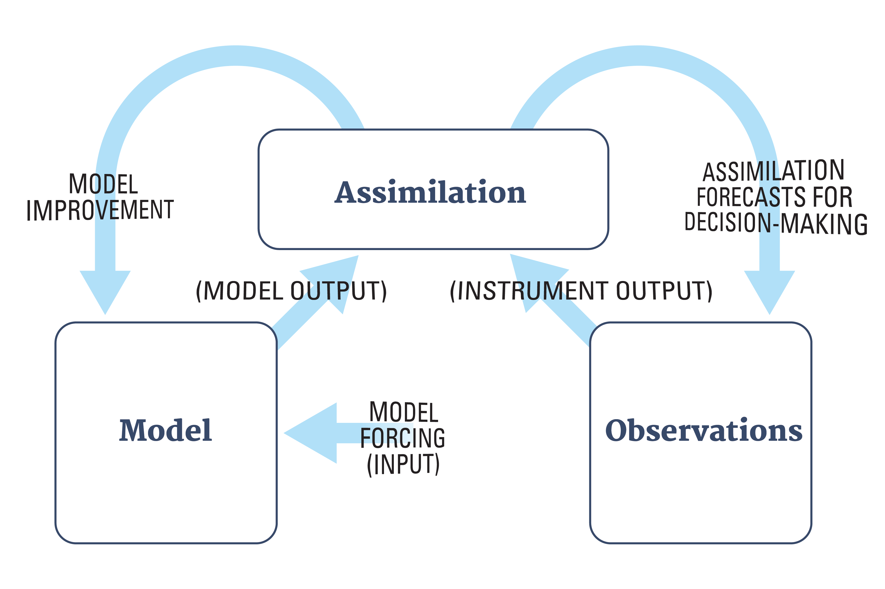
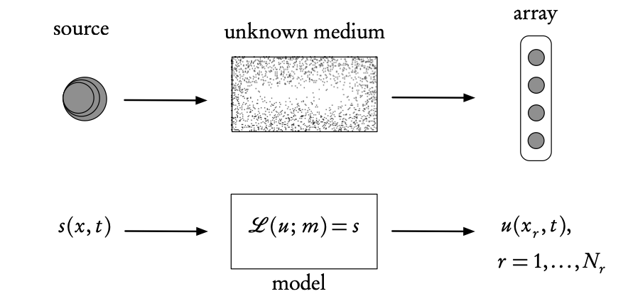
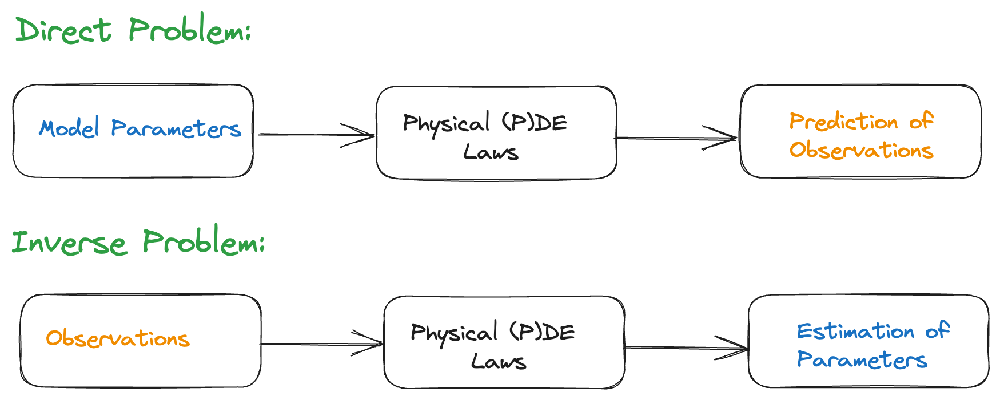
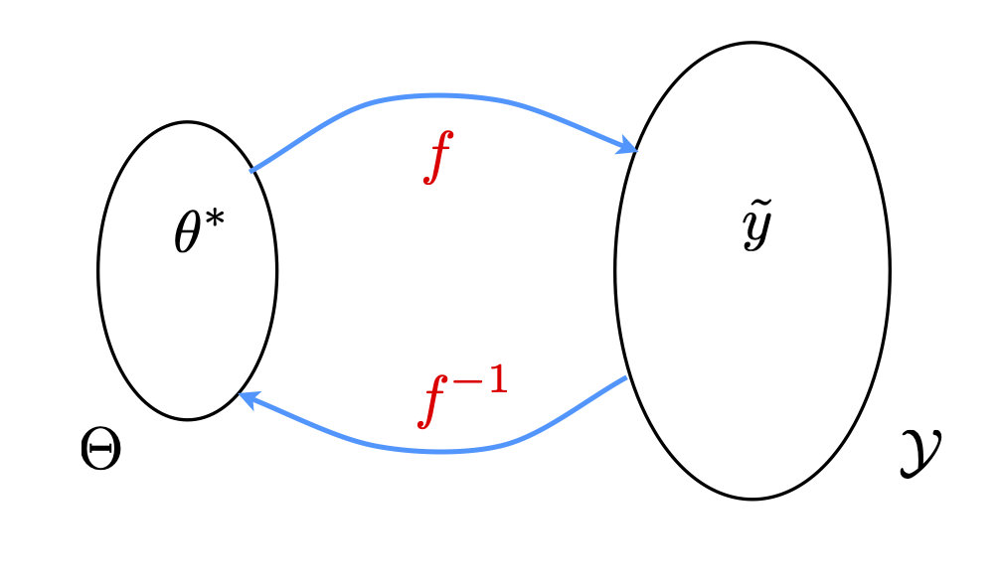
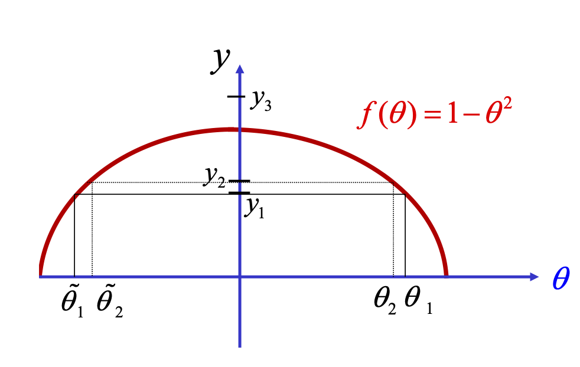

Basics I
Data Assimilation & Inverse Problems
2026-01-14
Text book

INTRODUCTION
What is data assimilation
Simplest view: a method of combining observations with model output.
Why do we need data assimilation? Why not just use the observations? (cf. Regression)
We want to predict the future!
For that we need models.
But when models are not constrained periodically by reality, they are of little value.
Therefore, it is necessary to fit the model state as closely as possible to the observations, before a prediction is made.
Definition 1 Data assimilation (DA) is the approximation of the true state of some physical system at a given time, by combining time-distributed observations with a dynamic model in an optimal way.
Data assimilation methods
There are two major classes of methods:
Variational methods where we explicitly minimize a cost function using optimization methods.
Statistical methods where we compute the best linear unbiased estimate (BLUE) by algebraic computations using the Kalman filter.
They provide the same result in the linear case, which is the only context where their optimality can be rigorously proved.
They both have difficulties in dealing with non-linearities and large problems.
The error statistics that are required by both, are in general poorly known.
Introduction: approaches
DA is an approach for solving a specific class of inverse, or parameter estimation problems, where the parameter we seek is the initial condition.
Assimilation problems can be approached from many directions (depending on your background/preferences):
control theory;
variational calculus;
statistical estimation theory;
probability theory,
stochastic differential equations.
Newer approaches (discussed later): nudging methods, reduced methods, ensemble methods and hybrid methods that combine variational and statistical approaches, Machine/Deep Learning based approaches.
Introduction: approaches
Navigation: important application of the Kalman filter.
Remote sensing: satellite data.
Geophysics: seismic exploration, geophysical prospecting, earthquake prediction.
Air and noise pollution, source estimation
Weather forecasting.
Climatology. Global warming.
Epidemiology.
Forest fire evolution.
Finance.
Introduction: nonlinearity
The problems of data assimilation (in particular) and inverse problems in general arise from:
The nonlinear dynamics of the physical model equations.
The nonlinearity of the inverse problem.
Introduction: iterative process

Closely related to
the inference cycle
machine learning…
Motivational Example — Digital Twin for Geological CO2 storage
See for SLIM website for our research on Geological CO2 Storage.
See also our recent publication An uncertainty-aware digital shadow for underground multimodal CO2 storage monitoring (Gahlot et al. 2025)
FORWARD AND INVERSE PROBLEMS
Inverse problems

Ingredients of an inverse problem: the physical reality (top) and the direct mathematical model (bottom). The inverse problem uses the difference between the model- predicted observations, u (calculated at the receiver array points \(x_r\)), and the real observations measured on the array, in order to find the unknown model parameters, m, or the source s (or both).
Forward and inverse problems

Consider a parameter-dependent dynamical system, \[\frac{d\mathbf{z}}{dt}=g(t,\mathbf{z};\boldsymbol{\theta}),\qquad \mathbf{z}(t_{0})=\mathbf{z}_{0},\] with \(g\) known, \(\mathbf{z}_0\) the initial condition, \(\boldsymbol{\theta}\in\Theta\) parameters of the system, \(\mathbf{z}(t)\in\mathbb{R}^{k}\) the system’s state.
Forward problem: Given \(\boldsymbol{\theta},\) \(\mathbf{z}_{0},\)find \(\mathbf{z}(t)\) for \(t\ge t_{0}.\)
Inverse problem: Given \(\mathbf{z}(t)\) for \(t\ge t_{0},\) find \(\boldsymbol{\theta}\in\Theta.\)
Observations
Observation equation: \[f(t,\boldsymbol{\theta})=\mathcal{H}\mathbf{z}(t,\boldsymbol{\theta}),\] where \(\mathcal{H}\) is the observation operator — to account for the fact that observations are never completely known (in space-time).
Usually we have a finite number of discrete (space-time) observations \[\left\{\widetilde{y}_{j}\right\} _{j=1}^{n},\] where \[\widetilde{y}_{j}\approx f(t_{j},\boldsymbol{\theta}).\]
Noise-free and noise data
Noise-free: \[\widetilde{y}_{j}=f(t_{j},\boldsymbol{\theta})\]
Noisy Data: \[\widetilde{y}_{j}=f(t_{j},\boldsymbol{\theta})+\varepsilon_{j},\] where \(\varepsilon_{j}\) is error and requires that we introduce variability/uncertainty into the modeling and analysis.
Well-posedness
Existence
Uniqueness
Continuous dependence of solutions on observations.
✓ The existence and uniqueness together are also known as “identifiability”.
✓ The continuous dependence is related to the “stability” of the inverse problem.
Well-posedness—math
Definition 2 Let \(X\) and \(Y\) be two normed spaces and let \(K\::\:X\rightarrow Y\) be a linear or nonlinear map between the two. The problem of finding \(x\) given \(y\) such that \[Kx=y\] is well-posed if the following three properties hold:
- WP1
-
Existence—for every \(y\in Y\) there is (at least) one solution \(x\in X\) such that \(Kx=y.\)
- WP2
-
Uniqueness—for every \(y\in Y\) there is at most one \(x\in X\) such that \(Kx=y.\)
- WP3
-
Stability— the solution \(x\) depends continuously on the data \(y\) in that for every sequence \(\left\{ x_{n}\right\} \subset X\) with \(Kx_{n}\rightarrow Kx\) as \(n\rightarrow\infty,\) we have that \(x_{n}\rightarrow x\) as \(n\rightarrow\infty.\)
This concept of ill-posedness will help us to understand and distinguish between direct and inverse models.
It will provide us with basic comprehension of the methods and algorithms that will be used to solve inverse problems.
Finally, it will assist us in the analysis of “what went wrong?” when we attempt to solve the inverse problems.
Ill-posedness of inverse problems
Many inverse problems are ill-posed!
Simplest case: one observation \(\widetilde{y}\) for \(f(\theta)\) and we need to find the pre-image \[\theta^{*}=f^{-1}(\widetilde{y})\] for a given \(\widetilde{y}.\)

Simplest case

Non-existence: there is no \(\theta_{3}\) such that \(f(\theta_{3})=y_{3}\)
Non-uniqueness: \(y_{j}=f(\theta_{j})=f(\widetilde{\theta}_{j})\) for \(j=1,2.\)
Lack of continuity of inverse map: \(\left|y_{1}-y_{2}\right|\) small \(\nRightarrow\left|f^{-1}(y_{1})-f^{-1}(y_{2})\right|=\left|\theta_{1}-\widetilde{\theta}_{2}\right|\) small.
Why is this so important?
Couldn’t we just apply a good least squares algorithm (for example) to find the best possible solution?
Define \(J(\theta)=\left|y_{1}-f(\theta)\right|^{2}\) for a given \(y_{1}\)
Apply a standard iterative scheme, such as direct search or gradient-based minimization, to obtain a solution
Newton’s method: \[\theta^{k+1}=\theta^{k}-\left[J'(\theta^{k})\right]^{-1}J(\theta^{k})\]
Leads to highly unstable behavior because of ill-posedness
What went wrong
✗ This behavior is not the fault of steepest descent algorithms.
✗ It is a manifestation of the inherent ill-posedness of the problem.
✗ How to fix this problem is the subject of much research over the past 50 years!!!
Many remedies (fortunately) exist…
References
K. Law, A. Stuart, K. Zygalakis. Data Assimilation. A Mathematical Introduction. Springer, 2015.
G. Evensen. Data assimilation, The Ensemble Kalman Filter, 2nd ed., Springer, 2009.
A. Tarantola. Inverse problem theory and methods for model parameter estimation. SIAM. 2005.
O. Talagrand. Assimilation of observations, an introduction. J. Meteorological Soc. Japan, 75, 191, 1997.
F.X. Le Dimet, O. Talagrand. Variational algorithms for analysis and assimilation of meteorological observations: theoretical aspects. Tellus, 38(2), 97, 1986.
J.-L. Lions. Exact controllability, stabilization and perturbations for distributed systems. SIAM Rev., 30(1):1, 1988.
J. Nocedal, S.J. Wright. Numerical Optimization. Springer, 2006.
F. Tröltzsch. Optimal Control of Partial Differential Equations. AMS, 2010.